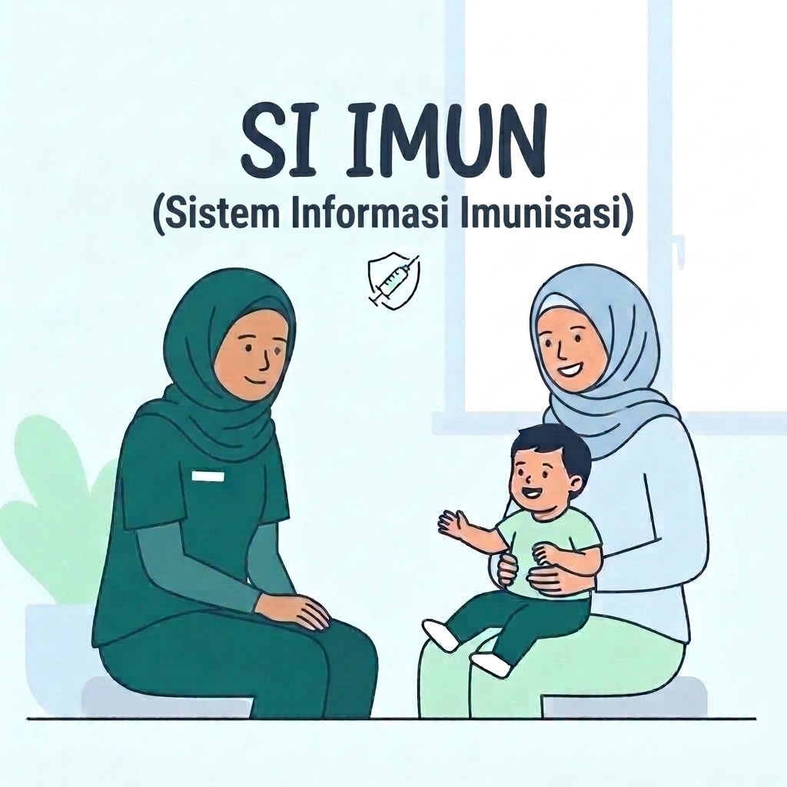
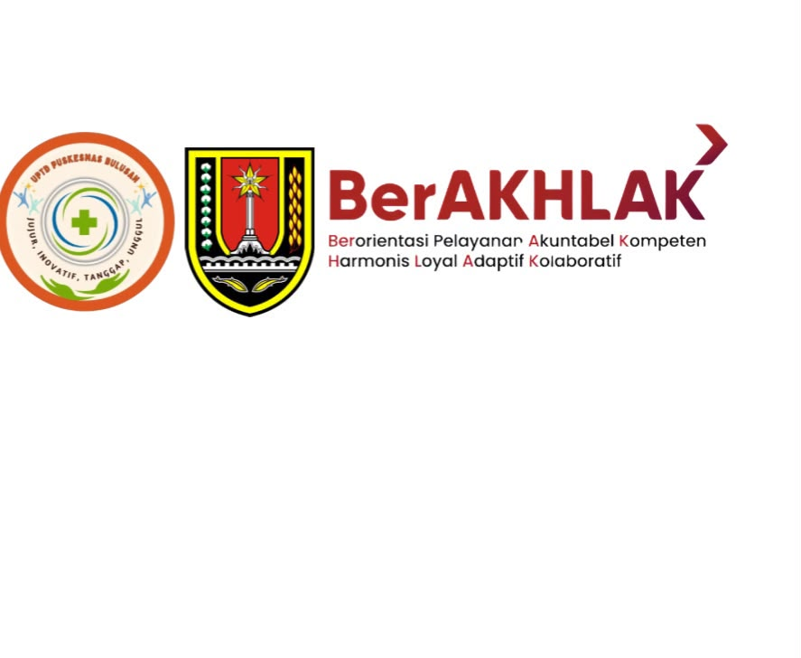

Lindungi Buah Hati,
Lengkapi Imunisasinya
Kenali manfaat imunisasi, pahami jadwalnya, dan dapatkan informasi yang tepat untuk membantu menjaga kesehatan anak.

Didukung & Bekerja Sama Dengan:

Hallo, Ayah dan Bunda 👋
Selamat datang di edukasi imunisasi. Informasi ini disusun untuk membantu Ayah dan Bunda memahami pentingnya imunisasi agar anak tumbuh sehat dan terlindungi dari berbagai penyakit berbahaya.
Apa Itu Imunisasi?
Imunisasi adalah cara melindungi tubuh anak dari penyakit tertentu dengan memberikan vaksin sehingga tubuh mampu membentuk kekebalan.
Tahukah Bunda?
Imunisasi telah menyelamatkan jutaan anak dari penyakit yang dapat dicegah setiap tahunnya.
Melindungi dari penyakit
Mengurangi risiko komplikasi
Melindungi keluarga
Anak dapat tumbuh sehat
Membantu mencegah penyebaran penyakit
Mengapa Anak Harus Imunisasi?
Memahami perjalanan perlindungan melalui imunisasi.
Penyakit
Kuman penyebab penyakit menyebar di lingkungan.
Risiko
Anak rentan tertular jika tubuh belum mengenali kuman.
Perlindungan
Vaksin melatih tubuh membentuk pertahanan (antibodi).
Anak lebih terlindungi
Tubuh siap melawan penyakit jika kelak terpapar.
Mitos atau Fakta? 🤔
Yuk, luruskan informasi tentang imunisasi.
Ada Program Imunisasi Kejar
Lindungi anak, lengkapi imunisasinya sesuai usia sekarang!
Apa itu Imunisasi Kejar?
Imunisasi kejar adalah pemberian vaksin lanjutan kepada anak yang terlambat atau belum lengkap imunisasinya sesuai jadwal usianya, agar anak tetap mendapatkan perlindungan yang optimal dari penyakit berbahaya.
Siapa yang Memerlukan?
- Anak yang terlambat datang sesuai jadwal.
- Anak yang belum menerima satu/lebih jenis vaksin.
- Anak yang riwayat imunisasinya belum lengkap.
Mengapa Imunisasi Kejar Penting?
- Melindungi anak dari penyakit berbahaya.
- Mencegah Kejadian Luar Biasa (KLB) penyakit menular.
- Menjaga kekebalan kelompok di masyarakat.
- Anak tetap bisa tumbuh sehat dan aktif.
Batas Usia Pemberian Imunisasi Kejar
Bagaimana Proses Imunisasi Kejar?
Cek Riwayat Imunisasi
Petugas kesehatan akan mengecek riwayat imunisasi anak.
Tentukan Kebutuhan Vaksin
Jenis dan jumlah dosis vaksin disesuaikan dengan usia dan riwayat.
Berikan Sesuai Rekomendasi
Vaksin diberikan sesuai kebutuhan untuk melengkapi perlindungan.
Lengkapi Hingga Tuntas
Pastikan anak mendapatkan semua dosis hingga imunisasi lengkap.
Setelah Imunisasi,
Apa yang Harus Dilakukan?
- Tetap berikan ASI
- Kompres hangat bila demam
- Banyak minum
- Berikan obat sesuai anjuran tenaga kesehatan
Kapan Harus ke Fasilitas Kesehatan Terdekat?
- Demam tinggi
- Sesak napas
- Kejang
- Anak tidak sadar
- Reaksi alergi berat
Jika ragu, konsultasikan dengan tenaga kesehatan.
Peran Ayah dan Bunda 🤍
Langkah sederhana yang sangat berarti untuk masa depan anak.
Kapan Waktu Imunisasi? 📅
Jadwal imunisasi dasar dan lanjutan berdasarkan rekomendasi IDAI.
* Jadwal imunisasi dapat disesuaikan berdasarkan kondisi anak dan rekomendasi tenaga kesehatan.
Informasi Jadwal Pelayanan Puskesmas Bulusan
- Vaksin BCG & MR: Dilayani khusus pada hari Selasa (Minggu ke-1 dan ke-3).
- Vaksin Lainnya: Dapat dilayani setiap hari pada jam operasional.
Takut Lupa Jadwal Imunisasi?
Pasang pengingat otomatis di kalender HP Anda. Pilih tanggal imunisasi anak Anda di bawah ini:
Jam Layanan & Informasi Kontak
Jadwal operasional pelayanan kesehatan resmi, alamat, dan saluran komunikasi Puskesmas Bulusan Kota Semarang.
Kontak & Lokasi
Saluran komunikasi resmi Puskesmas Bulusan
Jl. Timoho Raya, Bulusan, Kec. Tembalang, Kota Semarang, Jawa Tengah 50277
(024) 35303034
uptd.puskesmasbulusan@gmail.com
+62 851-4325-4710
@puskesmasbulusan
Petunjuk Arah & Navigasi
Jam Layanan
Jadwal operasional pelayanan
| Hari | Jam Pelayanan |
|---|---|
| Senin | 07.00–16.30 |
| Selasa | 07.00–16.30 |
| Rabu | 07.00–16.30 |
| Kamis | 07.00–16.30 |
| Jumat | 07.00–14.30 |
| Sabtu | 07.00–11.30 |
| Minggu | Tutup |
Ingat 5 Pesan Penting!
Cari Informasi dari Sumber Tepercaya
Bagaimana Memilih Informasi Kesehatan?
- Pastikan informasi berasal dari sumber resmi
- Periksa tanggal informasi
- Jangan langsung percaya informasi dari media sosial
- Tanyakan kepada tenaga kesehatan jika ragu
- Hindari informasi yang tidak memiliki sumber jelas
- Bandingkan informasi sebelum mempercayainya
Anak Terlindungi,
Orang Tua Lebih Tenang
Lengkapi imunisasi anak dan dapatkan informasi dari sumber yang terpercaya.